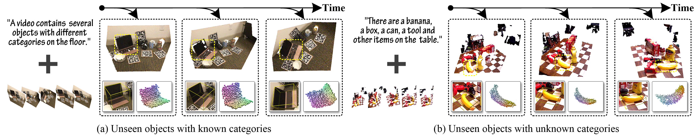
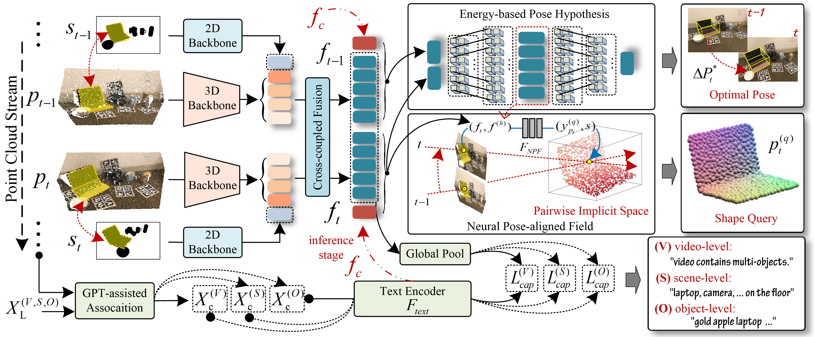

Abstract
3D visual language multi-modal modeling plays an important role in actual human-computer interaction.
However, the inaccessibility of large-scale 3D-language pairs restricts their applicability in real-world scenarios.
In this paper, we aim to handle a real-time multi-task for 6-DoF pose tracking of unknown objects, leveraging 3D-language
pre-training scheme from a series of 3D point cloud video streams, while simultaneously performing 3D shape reconstruction
in current observation. To this end, we present a generic \underline{L}anguage-to-\underline{4D} modeling paradigm termed L4D-Track,
that tackles zero-shot 6-DoF \underline{Track}ing and shape reconstructing by learning pairwise implicit 3D representation and
multi-modal features alignment. Our method constitutes two core parts. 1) Pairwise Implicit 3D Space Representation, that establishes
spatial-temporal to language coherence descriptions across continuous 3D point cloud video. 2) 3D Video-Language Association and Contrastive
Alignment, enables multi-modality semantic connections between 3D point cloud video and language. Our method trained exclusively on public
NOCS-REAL275 dataset, achieves promising results on both two publicly benchmarks. This not only shows powerful generalization performance,
but also proves its remarkable capability in zero-shot inference.
Pipline

Given a 3D point cloud stream and the language-3D captions, our method achieves real-time, causal 6-DoF pose tracking while
reconstructing the 3D shape in the current observation. We demonstrate that: (a) our method not only enables zero-shot inference for
unseen objects with known categories, (b) but also perfectly showcases the zero-shot capabilities for unseen objects with unknown classes.
Overview

Illustration of the pipline of proposed methodology. Given input point cloud stream along with the corresponding segmented
mask, we first encode them with both 2D/3D backbone and cross-coupled fusion module separately to obtain inter-frame embeddings
ft−1, ft. These paired embeddings are then used to model the energy-based hypothesis about changes in pose and learn a neural pose-
aligned field that generates shape query while aligning its pose for an arbitrary object. Meanwhile, these embeddings will be aligned
with the extra input multi-level language instructions using proposed GPT-assisted assocaition and alignment modules to achieve zero-shot
inference. It’s noteworthy that the caption embeddings fc are added into ft−1, ft to enhance its performance during the inference stage.
Visualization Results